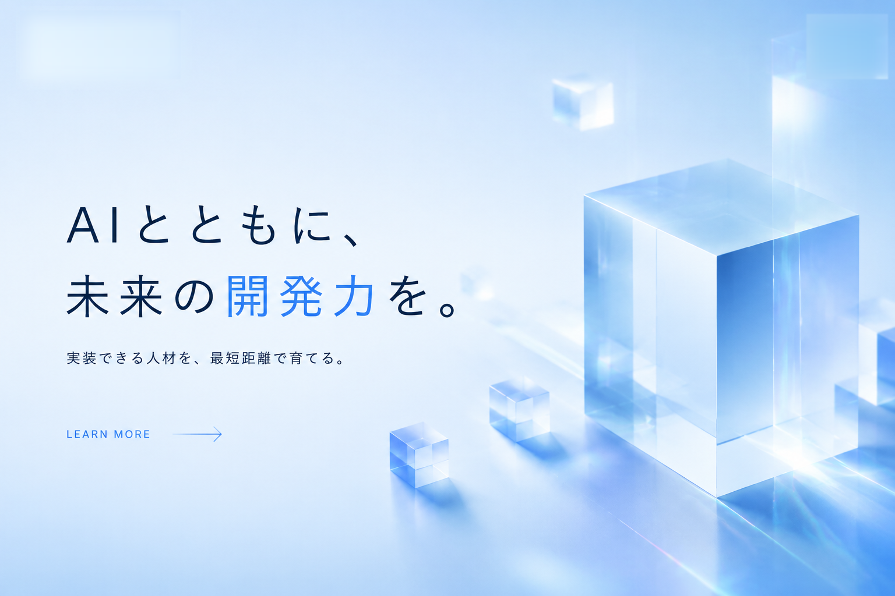

コードベースを読む
ファイル構成、既存パターン、テストの形を把握し、作業に必要な範囲を絞り込みます。

What is Codex?
Codexは、ローカルのコードベースを読み取り、実装・修正・検証を進めるAI開発エージェントです。 既存コードの文脈を踏まえながら、コマンド実行、ファイル編集、テスト確認まで一連の作業を支援します。
ファイル構成、既存パターン、テストの形を把握し、作業に必要な範囲を絞り込みます。
仕様の整理だけで終わらず、変更、差分確認、検証コマンドの実行まで担当できます。
レビュー対応、CI調査、PR作成など、開発チームの日常業務に接続できます。
Capabilities
仕様の所在、依存関係、影響範囲を短時間で把握し、変更方針を整理します。
既存設計に合わせた実装、UI調整、API連携、バグ修正を具体的な差分として作成します。
ユニットテスト、E2E、lint、型チェックを実行し、失敗ログから修正ポイントを特定します。
PRコメントやCI失敗を読み、未解決の指摘を実装に反映します。
README、運用手順、設計メモ、移行ガイドなど、コードと一緒に必要な文書を更新します。
依頼の出し方、確認観点、禁止事項、チーム内ルールを整備して再現性を高めます。
Difference
Codexは会話だけで完結する補助ツールではなく、開発環境の中で作業を進めるエージェントです。 研修では「任せる範囲」と「人が見るべき判断」を切り分け、現場で事故なく使う方法を扱います。
Use Cases
新任メンバーが大規模コードを理解する初速を上げ、調査の迷子時間を減らします。
軽微な修正、依存更新、UI調整、テスト追加を小さく確実に進めます。
指摘反映、影響確認、再テストを任せ、レビュアーは設計判断に集中できます。
仕様整理、画面文言、データ確認など、開発周辺業務を具体的な作業に落とし込みます。
Curriculum
講義だけでなく、実際の開発タスクに近い演習を通じて、翌日から使える型を身につけます。
環境準備、作業範囲の指定、コンテキスト共有、良い依頼文と悪い依頼文を学びます。
既存コード調査、変更作成、テスト実行、差分レビューまでを一連の流れで演習します。
PR対応、CI調査、レビュー観点、権限と安全ルールをチーム運用に落とし込みます。
現場タスクを題材に、導入ロードマップ、運用ルール、評価指標を設計します。
Pricing
1名あたりの受講価格です。法人単位の開催、カスタム教材、社内環境に合わせた演習も対応します。
Contact